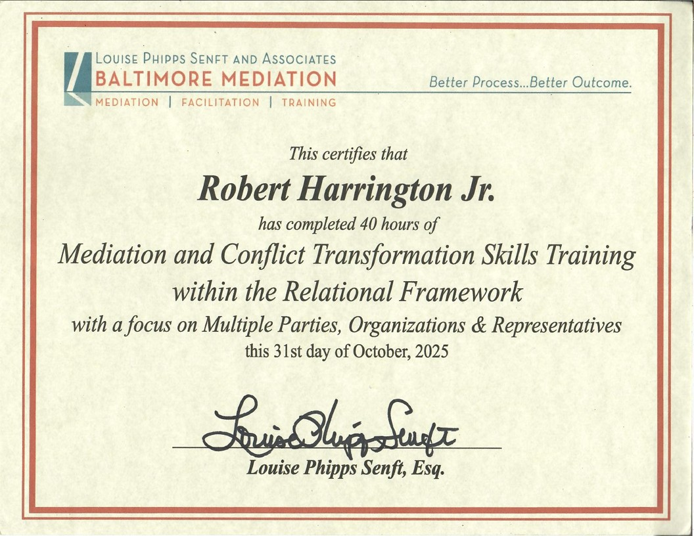
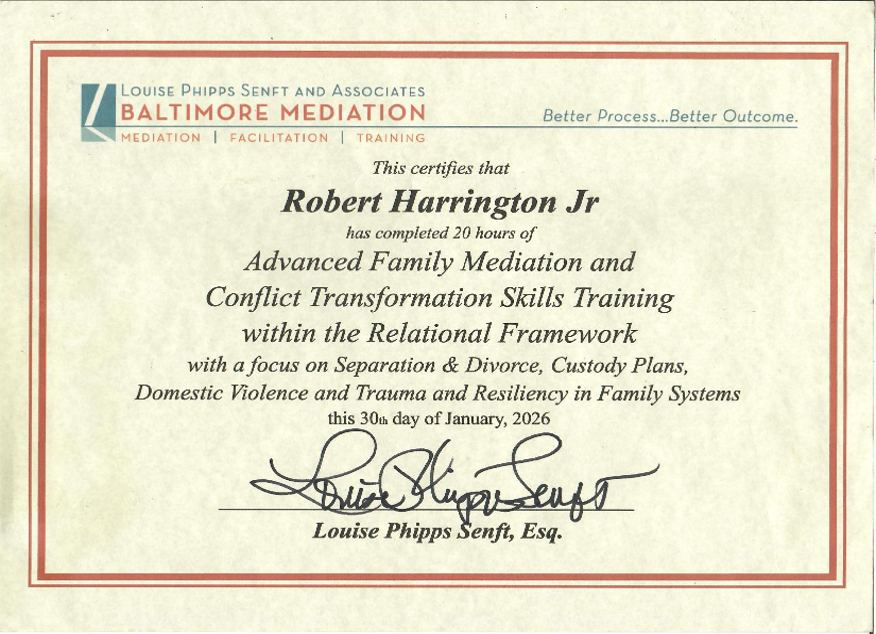
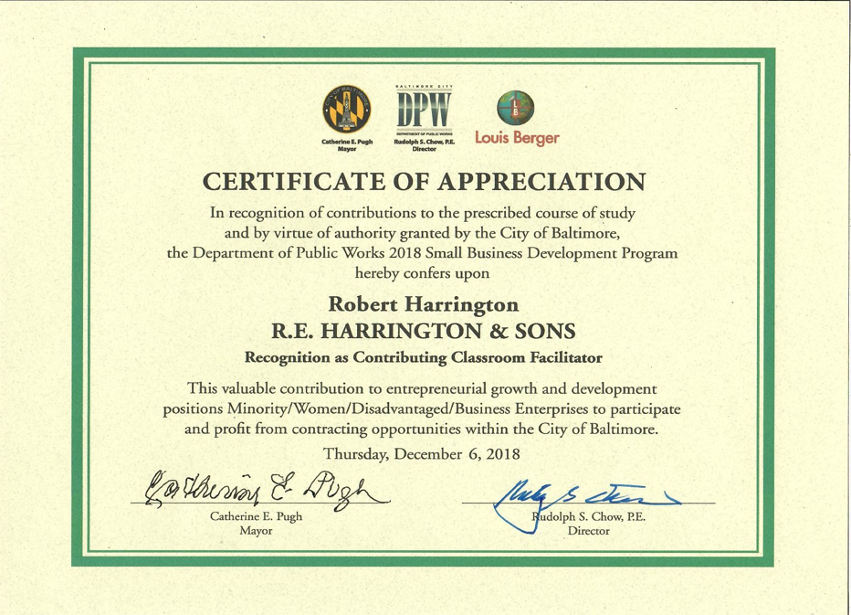
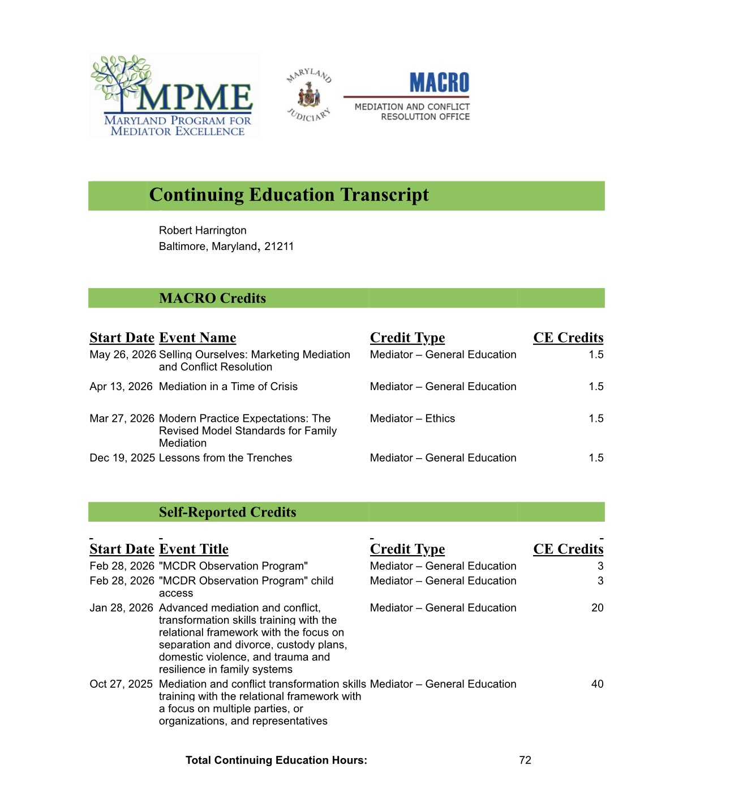
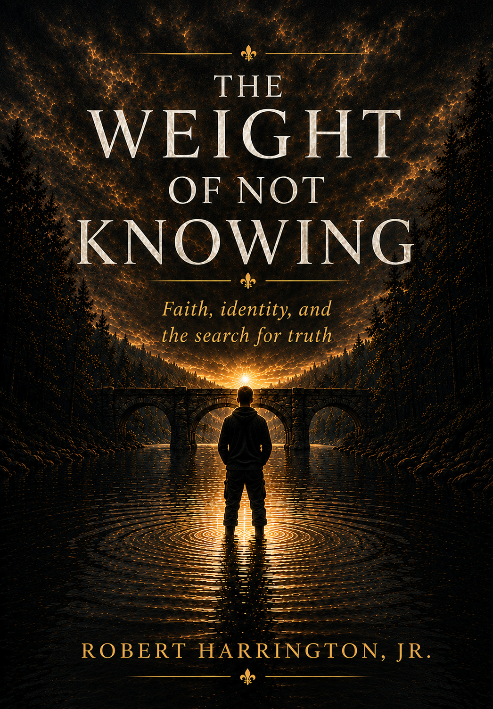

HarringtonEduTainment
HarringtonEduTainment is an educational platform dedicated to exploring faith, identity, conflict, personal growth, and the human experience through thoughtful discussion and reflection.
Mediator | Author | Educator
Understanding Precedes Resolution
Robert Harrington, Jr. is a mediator, author, educator, military veteran, and creator of HarringtonEduTainment. Based in Baltimore, Maryland, his work explores conflict, faith, identity, relationships, and the pursuit of understanding.
Through mediation, writing, and educational content, he encourages curiosity, dialogue, and the belief that understanding precedes resolution.
Conflict often brings people into conversation carrying frustration, fear, disappointment, hurt, and uncertainty. In many situations, communication has broken down long before mediation begins. People may feel unheard, misunderstood, dismissed, or unable to safely express what matters most to them.
My approach to mediation is grounded in a simple belief: understanding precedes resolution.
This does not mean understanding guarantees agreement. Nor does it mean every conflict can or should be resolved. Rather, meaningful resolution is often difficult to achieve when understanding is absent.
For this reason, I view mediation primarily as a process of communication rather than a process of persuasion. While agreements may emerge through mediation, understanding possesses value even when agreement is never reached. At times, understanding itself becomes a meaningful outcome.
The mediator is not a judge, decision-maker, or advocate for either party.
Instead, the mediator provides a structured process within which parties can engage one another directly. While the mediator helps maintain a safe environment and a constructive process, the conversation ultimately belongs to the participants themselves.
The pace, tone, and manner of communication are not determined by the mediator's preferences, but by what allows the parties to engage authentically and effectively. At times, conversations may be calm and reflective. At other times, they may involve strong emotions, frustration, or disagreement.
The mediator's role is not to control the conversation, but to support a process that protects physical safety and self-determination while creating opportunities for meaningful dialogue. Self-determination remains central to mediation because lasting decisions depend upon the voluntary participation and decision-making of the parties themselves.
Part of this role involves helping illuminate what is already present within the discussion: recurring concerns, areas of misunderstanding, important themes, points of recognition, and sometimes what is not being expressed at all.
Through this process, parties are given the opportunity to examine conflict with greater clarity and to make informed decisions for themselves.
Transformative mediation places particular value on recognition and empowerment.
Recognition involves seeing and acknowledging the experiences, perspectives, and humanity of another person. Recognition does not require agreement. It does not require compromise. It simply requires a willingness to consider that another person's experience may be real and meaningful to them.
Empowerment involves supporting individuals in their ability to make decisions, express themselves clearly, and participate meaningfully in difficult conversations. Conflict often leaves people feeling unheard, uncertain, reactive, or disconnected from their own sense of agency. A mediation process can help participants rediscover confidence in their ability to communicate and navigate challenges.
In many conflicts, the dynamics between participants become unbalanced. One party may feel unheard, dismissed, intimidated, or powerless. Through careful attention to communication and interaction, opportunities for recognition and empowerment can emerge, helping create conditions in which both parties are better able to participate in the conversation.
Many conflicts persist not simply because people disagree, but because they no longer feel safe enough to be vulnerable with one another.
When individuals feel threatened, dismissed, misunderstood, or emotionally guarded, communication often becomes defensive. Positions become rigid. Listening becomes more difficult. Curiosity gives way to certainty.
Compassion and empathy are often among the first casualties of conflict. People become focused on defending their own experiences and protecting themselves from further harm. As a result, opportunities for understanding can become increasingly limited.
Mediation provides a structured environment where difficult conversations can occur with greater safety and support. While a mediator cannot guarantee emotional comfort or agreement, the mediation process can create conditions in which participants are better able to speak honestly, listen openly, and engage one another more constructively.
When vulnerability becomes possible, compassion and empathy often become more accessible. And when compassion and empathy become possible, understanding becomes more likely.
Because while resolution may not always occur, understanding remains valuable.





A Collection of Meditations on Faith, Identity, and Existence
Rather than offering answers, this work invites readers to wrestle with uncertainty, limitation, purpose, and trust. Through reflection and inquiry, it explores what it means to move forward when clarity is incomplete and certainty remains out of reach.
Available on Amazon.
A Fractured Humanity
An exploration of understanding, conflict, forgiveness, and the fractures that shape human relationships and human experience.
A Boulder in a Stream
A reflective literary work examining memory, environment, formation, and the subtle currents that shape a life over time.
HarringtonEduTainment is an educational platform dedicated to exploring faith, identity, conflict, personal growth, and the human experience through thoughtful discussion and reflection.
Receive occasional updates, reflections, and announcements from Robert Harrington Jr.
 @HarringtonEduTainment
@HarringtonEduTainment